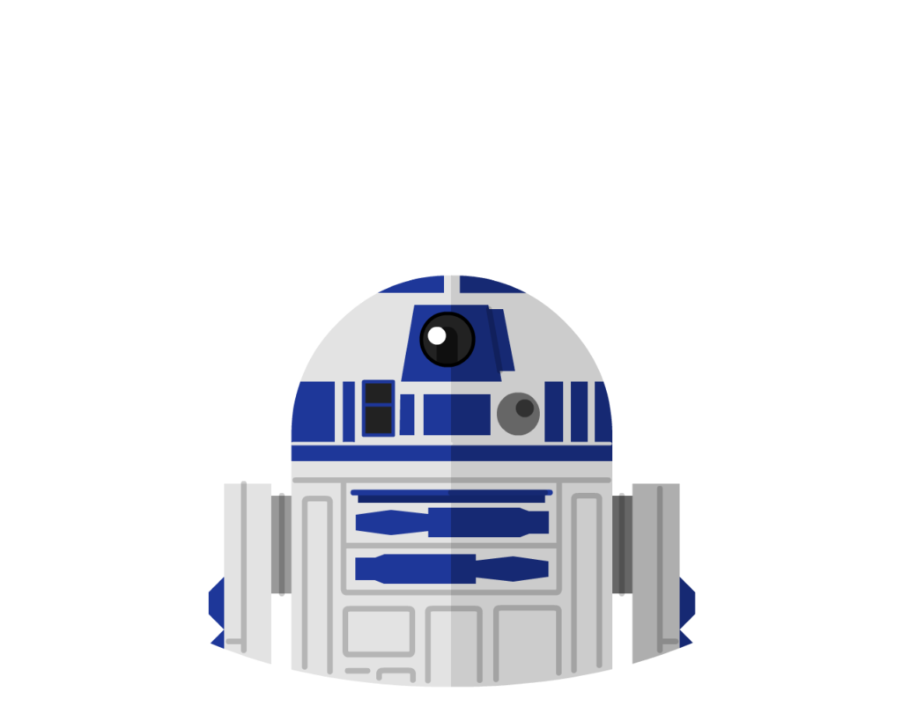

R2-D2
Perfil
Droid astromecânico com ampla experiência em manutenção de naves, navegação e suporte técnico em missões críticas. Atuei ao lado de pilotos e oficiais, incluindo Anakin Skywalker e Luke Skywalker, oferecendo soluções rápidas e eficientes em situações de risco.
Sou confiável, adaptável e especializado em reparos, análise de sistemas e comunicação técnica.
Principais competencias
- Comunicação técnica em linguagem binária e interfaces digitais.
- Manutenção e reparo de naves e sistemas eletrônico.
- Navegação e cálculo de rotas espaciais.
- Suporte técnico em missões de alta complexidade.
Formação academica
Certificação em Engenharia e Manutenção de Sistemas Astromecânicos pela Academia Técnica da República, Especialização em Integração e Análise de Sistemas Digitais Programa de Desenvolvimento de Droids
Experiencia Profissional
- Droid Astromecânico – Serviço à República / Aliança Rebelde
- Realização de manutenção e reparos em naves durante operações críticas
- Suporte técnico direto a pilotos e comandantes em missões estratégicas
- Execução de diagnósticos e resolução de falhas em sistemas de voo
- Assistente Técnico de Voo – Serviço a Anakin Skywalker
- Apoio em missões de combate e patrulha
- Monitoramento e ajuste de sistemas em tempo real
- Atuação em situações emergenciais com alta eficiência
Contato
Uma galáxia muito, muito distante…